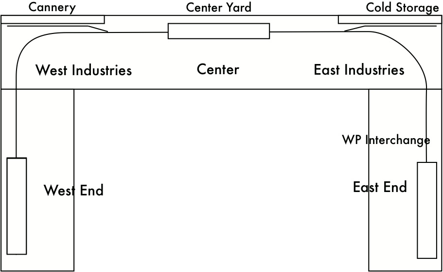

Example Layout: Stockton
 This example switch list layout simulates the switching railroad in a Stockton, CA industrial development. (It's inspired, but not an exact model, of the Stockton, Terminal, and Eastern Railroad.) The railroad interchanges on the west with the Southern Pacific and on the east with the Western Pacific. The industrial area has a western area ("West Industries"), eastern area ("East Industries"), and yard between the two.
{kind=link}
Two versions exist for this layout, "Stockton with Divisions" that uses divisions so that WP cars exit through the west yard and SP cars and foreign cars through the east, and another "Stockton Example" which allows cars to exit via either yard.
There is one train, a daily switching run that goes from the yard to the west industries, then to the SP interchange, then to the east industries, and finally to the WP interchange before returning to the yard.
The cargos have most of the traffic going via the SP, with a few going via the WP. This is prototypical; most shippers sent occasional loads through the WP to encourage competition, but sent the bulk of their loads through the SP.
Note that the foreign boxcars are associated with the East division. Because only the SP Interchange yard in West End accepts cars from the East division, empty and loaded foreign boxcars will only exit via the SP.
The WP Interchange, because it only accepts WP division cars, will only accept empty WP cars and loaded WP or SP cars destined to locations in the WP West offline town. An SP boxcar from the (SP division) Cannery being sent to the WP West destination in the WP division will be sent out via the WP Interchange yard in East End.
Related Topics:
Detail: Divisions for cars and industries for more details on how a freight car's "Home Division" affects the assigning of cars to cargos.